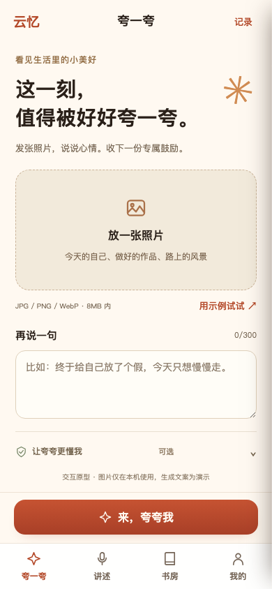

V20 · 最小接入版
新增照片夸夸、结果、记录三个页面；原回忆录流程与页面完整保留。

体验夸一夸 ↗YUNYI / V20.0.0 / 2026.09.08
以你确认的线上最终版为基线，保留回忆录，最小接入夸一夸。
新增照片夸夸、结果、记录三个页面；原回忆录流程与页面完整保留。

体验夸一夸 ↗与用户指定的线上文件逐字一致。作为本版基线完整保存，可随时打开对照。
打开原最终版 ↗本地交互原型：生成文案为演示，尚未连接真实 AI、云端知识库或正式小程序。首发开发范围已整理在项目文档中。
用户确认的线上最终版
基线提交：c60bd06
独立分支：prototype/v20-praise-integration
基线 SHA-256：45b990dcf86031bfdb8c317f7783f6ba992461e00d7c7e75d116031e7ebfb651
V19 保留为历史定位探索稿，本次不使用它作为实现基线。V17 不被覆盖，V20 的增量功能独立保存。